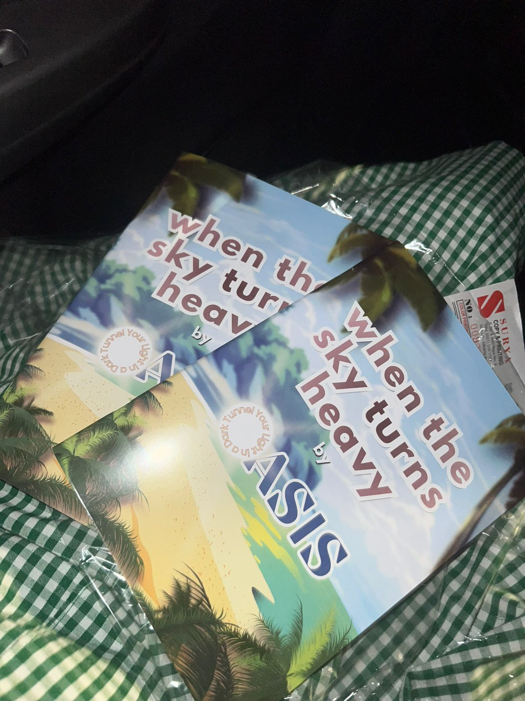

Tentang OASIS


Opening Awareness & Supports Inner Strength
Meningkatkan kesadaran dan pemahaman siswa tentang pentingnya kesehatan mental, terutama PTSD dan depresi.
Mendorong budaya terbuka, empati, dan saling mendukung dalam lingkungan sekolah.
Membantu individu menemukan solusi dan dukungan yang tepat untuk masalah mental.
Menyediakan akses yang mudah terhadap informasi kesehatan mental di sosial media
Mewujudkan generasi muda yang memiliki pemahaman mendalam, sikap peduli, serta keberanian untuk membahas dan mengedukasi mengenai kesehatan mental, khususnya gangguan stres pascatrauma dan depresi, secara ilmiah, empatik, dan bertanggung jawab.
Pada produk STEAM yang kami akan buat adalah Infografis, Website, Instagram, dan Diary. Kami membuat website yang akan membantu memberikan solusi untuk mengatasi gangguan mental, terutama depresi dan PTSD. Website akan memberi informasi kepada pengguna tentang gangguan mentalnya. Kami menggunakan maskot yang berupa seekor anjing bernama ‘BEAR’ yang merupakan akronim untuk ‘Be Empathetic, Accept, and Reach out’ dan maskot itu yang akan menjadi karakter yang menjawab pertanyaan pengguna. Pada Instagram kami, yaitu @bearofoasis, kami memberi posting poster-poster dan juga informasi-informasi mengenai gangguan dan kesehatan mental. Di akun Instagram ini, kami juga menggunakan untuk mempromosikan websitenya agar para pembaca dapat mengetahui lebih dalam apa yang disediakan oleh website.
Diary yang kami buat memiliki beberapa tipe halaman dan beberapa minigames supaya menjadi interaktif untuk kalian.